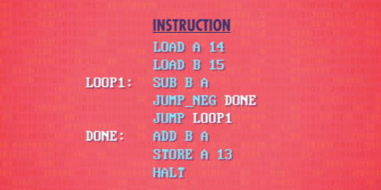
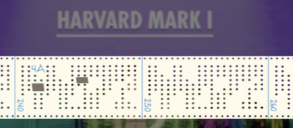
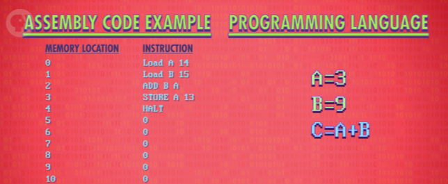

i.e. The First Programming Languages
之前我们把重点放在硬件 - 组成计算机的物理组件，比如电，电路，寄存器，RAM，ALU，CPU ，但在硬件层面编程非常麻烦。
所以程序员想要一种更通用的方法编程 - 一种"更软的"媒介。
没错，我们要讲软件！
第 8 集我们一步步讲了一个简单程序，第一条指令在内存地址 0：0010 1110 ，之前说过，前 4 位是操作码 ，简称 OPCODE 。对于这个假设 CPU，0010 代表 LOAD_A 指令 - 把值从内存复制到寄存器 A ，后 4 位是内存地址，1110 是十进制的 14 ，所以这 8 位表达的意思是 “读内存地址 14，放入寄存器 A”。
只是用了两种不同语言，可以想成是英语和摩尔斯码的区别 - “你好” 和 “…. . .-.. .-.. —” 是一个意思：你好。只是编码方式不同，英语和摩尔斯码的复杂度也不同，英文有 26 个字母以及各种发音，摩尔斯码只有"点"和"线"，但它们可以传达相同的信息，计算机语言也类似。
机器语言
计算机能处理二进制，二进制是处理器的"母语"，事实上，它们只能理解二进制，这叫 “机器语言” 或 “机器码”。
在计算机早期阶段，必须用机器码写程序。具体来讲，会先在纸上用英语写一个"高层次版"。举例：“从内存取下一个销售额，然后加到天、周、年的总和，然后算税”，等等。.. 这种对程序的高层次描述，叫 “伪代码” 。在纸上写好后，用"操作码表"把伪代码转成二进制机器码，翻译完成后，程序可以喂入计算机并运行。
汇编语言
你可能猜到了，很快人们就厌烦了。所以在 1940~1950 年代，程序员开发出一种新语言， 更可读、更高层次，每个操作码分配一个简单名字，叫"助记符"，“助记符"后面紧跟数据，形成完整指令。与其用 1 和 0 写代码，程序员可以写"LOAD_A 14”，我们在第 8 集用过这个助记符，因为容易理解得多！
当然，CPU 不知道 LOAD_A 14 是什么，它不能理解文字，只能理解二进制。所以程序员想了一个技巧，写二进制程序来帮忙，它可以读懂文字指令，自动转成二进制指令，这种程序叫 - 汇编器（Assembler）。汇编器读取用"汇编语言"写的程序，然后转成"机器码" ，“LOAD_A 14” 是一个汇编指令的例子。
= 对的，把翻译工作交给了 ‘汇编器’ - 一个二进制程序。🤣*
随着时间推移，汇编器有越来越多功能，让编程更容易。
其中一个功能是自动分析 JUMP 地址。
这里有一个第 8 集用过的例子：注意，JUMP NEGATIVE 指令跳到地址 5 ，JUMP 指令跳到地址 2 ，问题是，如果在程序开头多加一些代码，所有地址都会变，更新程序会很痛苦！所以汇编器不用固定跳转地址，而是让你插入可跳转的标签，当程序被传入汇编器，汇编器会自己搞定跳转地址。程序员可以专心编程，不用管底层细节。
隐藏不必要细节来做更复杂的工作。
我们又提升了一层抽象！🔆
然而，即使汇编器有这些厉害功能，比如自动跳转。汇编只是修饰了一下机器码，一般来说，一条汇编指令对应一条机器指令，所以汇编码和底层硬件的连接很紧密。汇编器仍然强迫程序员思考用什么寄存器和内存地址，如果你突然要一个额外的数，可能要改很多代码。
让我们进入思考泡泡
葛丽丝·霍普博士 也遇到了这个问题，作为美国海军军官，她是哈佛 1 号计算机的首批程序员之一，这台机器我们在第 2 集提过。这台巨大机电野兽在 1944 年战时建造完成，帮助盟军作战，程序写在打孔纸带上，放进计算机执行。顺便一说，如果程序里有漏洞，真的就 直接用胶带来补"漏洞"。
> 补‘漏洞’
Mark 1 的指令集非常原始，甚至没有 JUMP 指令，如果代码要跑不止一次，得把带子的两端连起来做成循环。换句话说，给 Mark 1 编程简直是噩梦！
战后，霍普继续在计算机前沿工作，为了释放电脑的潜力，她设计了一个高级编程语言，叫"算术语言版本 0"，简称"A-0" 。
汇编与机器指令是一一对应的，但一行高级编程语言 可能会转成几十条二进制指令。为了做到这种复杂转换 Hopper 在 1952 年创造了第一个编译器，编译器专门把高级语言 转成低级语言，比如汇编或机器码（CPU 可以直接执行机器码）。
谢了 思想泡泡
尽管"使编程更简单"很诱人，但很多人对霍普的点子持怀疑态度。她曾说 “我有能用的编译器，但没人愿意用，他们告诉我计算机只能做算术，不能运行程序”。
但这个点子是好的，不久，很多人尝试创造新编程语言 - 如今有上百种语言！
可惜的是，没有任何 A-0 的代码遗留下来，所以我们用 Python 举例（一门现代编程语言）。
假设我们想相加两个数字，保存结果。记住，如果用汇编代码，我们得从内存取值，和寄存器打交道，以及其他底层细节，但同样的程序可以用 Python 这样写：
不用管寄存器或内存位置 - 编译器会搞定这些细节，不用管底层细节。
程序员只需要创建 代表内存地址的抽象，叫 “变量” ，给变量取名字，现在可以把两个数 存在变量里，这里取名 A 和 B, 实际编程时你可以随便取名；然后相加两个数，把结果存在变量 C 。底层操作时，编译器可能把变量 A 存在寄存器 A ，但我不需要知道这些！眼不见心不烦 ！😼 这是个重要历史里程碑，但 A-0 和之后的版本没有广泛使用。
高级程序语言
FORTRAN，名字来自 “公式翻译”（Formula Translation），这门语言数年后由 IBM 在 1957 年发布，主宰了早期计算机编程。
John Backus, the FORTRAN project director, FORTRAN 项目总监 John Backus 说过，“我做的大部分工作都是因为懒，我不喜欢写程序，所以我写这门语言，让编程更容易”
你懂的，典型的"懒人"，😎 创造自己的编程语言。
平均来说，FORTRAN 写的程序，比等同的手写汇编代码短 20 倍，然后 FORTRAN 编译器会把代码转成机器码。人们怀疑性能是否比得上手写代码，但因为能让程序员写程序更快，所以成了一个更经济的选择，运行速度慢一点点，编程速度大大加快。
当时 IBM 在卖计算机，因此最初 FORTRAN 代码只能跑在 IBM 计算机上。1950 年代大多数编程语言和编译器只能运行在一种计算机上，如果升级电脑，可能要重写所有代码！因此工业界，学术界，政府的计算机专家在 1959 年组建了一个联盟 - 数据系统语言委员会，Grace Hopper 担任顾问，开发一种通用编程语言，可以在不同机器上通用，最后诞生了一门高级，易于使用，“普通面向商业语言”，简称 COBOL（Common Business-Oriented Language） 。
为了兼容不同底层硬件，每个计算架构需要一个 COBOL 编译器。最重要的是，这些编译器都可以接收相同 COBOL 代码，不管是什么电脑，这叫"一次编写，到处运行" 。如今大多数编程语言都是这样，不必接触 CPU 特有的汇编码和机器码，减小了使用门槛。
在高级编程语言出现之前，编程只是计算机专家和爱好者才会做的事，而且通常是主职，但现在，科学家，工程师，医生，经济学家，教师等等，都可以把计算机用于工作。
感谢这些语言！
计算机科学从深奥学科 变成了大众化工具，同时，编程的抽象也让计算机专家，现在叫"专业程序员"，制作更复杂的程序，如果用汇编写可能要上百万行。
当然，计算机的历史没有在 1959 年结束，编程语言设计的黄金时代才刚刚开始，和硬件一起飞速发展。
In the 1960s, we had languages like ALGOL, LISP and BASIC. 在 1960 年代，有 ALGOL, LISP 和 BASIC 等语言，70 年代有：Pascal，C 和 Smalltalk ，80 年代有：C++，Objective-C 和 Perl ，90 年代有：Python，Ruby 和 Java ，新千年 Swift, C#, Go 在崛起 。 有些语言你可能听起来耳熟 - 很多现在还存在，你现在用的浏览器很可能是 C++ 或 Objective-C 写的。
我刚才说的编程语言名字只是冰山一角，新的编程语言在不断诞生。新语言想用更聪明的抽象，让某些方面更容易或更强大，或利用新技术和新平台带来的优势，让更多人能快速做出美妙的事情。许多人认为编程的"圣杯"是直接用英文，直接对计算机说话，然后它会理解并执行，这种智能系统目前只存在于科幻小说，“2001：太空漫游” 的粉丝可能没什么意见。
现在你理解了编程语言，接下来几集我们会深入了解编程语言和用语言写的软件，是怎么做到那些酷事。
下周见。